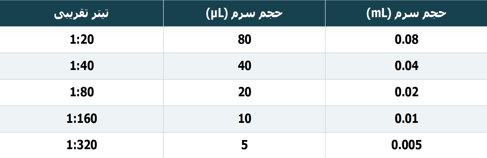
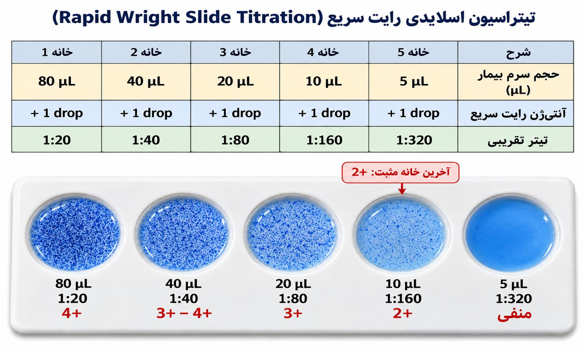
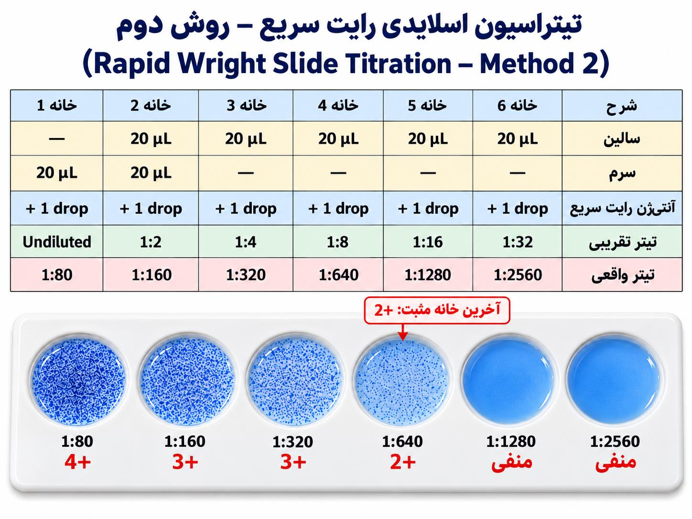

شبنم رضاپور
کسی که PDFها را راضی کرد محتوایشان را بیکموکاست لو بدهند.
این جزوه با استفاده از جزوهساز پاپیروس و به صورت خودکار تولید شده است. ممکن است شامل خطا یا برداشت نادرست باشد و نیازمند بررسی و بازبینی مجدد است.
تیتراسیون اسلایدی برای گزارش تیتر تقریبی آنتیبادی به کار میرود و میتواند پیش از آمادهشدن نتیجهٔ تست لولهای، اطلاعاتی برای تصمیمگیری دربارهٔ بیمار مشکوک به تب مالت فراهم کند. در این مبحث، دو روش تیتراسیون اسلایدی بررسی میشود: روش اول؛ استفاده از حجم بالایی از سرم و بدون نیاز به نرمال سالین. روش دوم؛ نیازمند نرمال سالین و حجم کم سرم. کاربرد، نحوهٔ اجرا و گزارش تیتر این روشها، تفاوتشان با تست لولهای، آنتیژنهای مورد استفاده و پرسشهای مطرحشده دربارهٔ Rose Bengal و کیت Brucella IgM نیز مطرح میشوند.
تیتراسیون روی اسلاید برای گزارش تیتر تقریبی آنتیبادی به کار میرود. پزشک برای تصمیمگیری دربارهٔ بیمار مشکوک به تب مالت باید تیتر را بداند؛ بهویژه در وضعیت حاد که ممکن است نخواهد حدود ۲۴ ساعت برای نتیجهٔ تست لولهای صبر کند. بنابراین، میتوان پیش از انجام تست تأییدی لولهای، تیتر تقریبی را با تیتراسیون روی اسلاید گزارش کرد.
این روش برای بعضی بیماریها، بهخصوص تب مالت و حصبه، و نیز برخی بیماریهای دیگر به کار میرود. در جلسهٔ قبل، تب مالت به روش کیفی یا screening بررسی شد و نتیجه بهصورت positive یا negative و با درجهٔ واکنش، مانند ۴+، ۳+ یا ۲+ به بالا، گزارش میشد. در روش نیمهکمی این جلسه، نتیجه بهصورت تیتر آنتیبادی، برای مثال ۱:۱۶۰، گزارش میشود.
برای تب مالت(بروسلوز) از اسلایدهای با زمینهٔ سفید استفاده میکنیم؛ جهت مشاهدهی بهتر رنگ آنتیژن و تشکیل آگلوتیناسیون. اسلایدهای با زمینهٔ سیاه مربوط به تستهای دیگری هستند که فعلاً موضوع بحث نیستند. برای تیتراسیون اسلایدی و روش لولهایِ از آنتیژن Rapid Wright استفاده میشود. تفاوتی که بین این دو وجود دارد، برای تست لولهای آنتیژن Rapid Wright که 1:10 رقیق شده مورد استفاده قرار میگیرد. همین موضوع باعث میشود آنتیژن Rapid Wright تستهای لولهای آبی روشن باشند.
کیت تشخیصی تب مالت(بروسلوز) واکنشهای ایجادشده در حجم سرمهای ۸۰، ۴۰، ۲۰، ۱۰ و ۵ میکرولیتر را با تیترهای ۱:۲۰ تا ۱:۳۲۰ نشان میدهد؛ این حجمها تقریباً معادل مقادیر متناظر در یک آزمون لولهای هستند و به صورت تجربی به دست آمدهاند. البته جهت تایید نهایی تستهای لولهای ضروری میباشند. جدول زیر را به عنوان یک قاعده تجربی و تقریبی به یاد داشته باشید:

در این جلسه به بررسی دو روش تیتراسیون روی اسلاید پرداخته شدهاست. روش اولِ شرحدادهشده در کتاب دکتر پاکزاد؛ کتاب اصول و تفسیر آزمایشهای سرولوژی بالینی روش دوم شرح داده شده در کتاب دکتر قلعهنویی و همکاران.
1- روی اسلاید ششخانه، بهترتیب حجمهای زیر از سرم بیمار را میریزیم. مقدار سرم در هر خانه نصف خانهٔ قبل است: تیترهای تقریبی متناظر را با جدول بخش پیشنیاز تطبیق بدید جهت درک بهتر
| شماره خانه | حجم سرم | معادل برحسب mL | تیتر تقریبی متناظر |
|---|---|---|---|
| 1 | ۸۰ میکرولیتر | ۰٫۰۸ mL | ۱:۲۰ |
| 2 | ۴۰ میکرولیتر | ۰٫۰۴ mL | ۱:۴۰ |
| 3 | ۲۰ میکرولیتر | ۰٫۰۲ mL | ۱:۸۰ |
| 4 | ۱۰ میکرولیتر | ۰٫۰۱ mL | ۱:۱۶۰ |
| 5 | ۵ میکرولیتر | ۰٫۰۰۵ mL | ۱:۳۲۰ |
| 6(کنترل منفی) | یک قطره آنتیژن | - | - |
اگر سمپلر در دسترس نباشد و از پیپت استفاده شود، دانستن معادل حجم سرمها برحسب mL کمککننده است. 2- پس از این مرحله به هر شش خانه یک قطره آنتیژن Rapid Wright اضافه و مخلوط میکنیم.
جهت مخلوط کردن بهتر است از اپلیکاتورهای جداگانه استفاده شود. اگر قصد دارید از یک اپلیکاتور استفاده کنید، از خانهٔ دارای کمترین مقدار سرم، یعنی رقیقترین خانه، شروع کنید و بهسمت خانههای غلیظتر بروید. انتقال از خانههای غلیظتر به رقیقتر میتواند باعث اثر carry-over شود و بر نتیجهی خانههای رقیقتر اثر بگذارد.
3- پس از مخلوطکردن، پلیت را ۳ تا ۴ دقیقه تکان میدهیم. مطابق بروشور کیت عمل کنید: اگر زمان ۳ تا ۴ دقیقه ذکر شده باشد، ۳ دقیقه هم قابلقبول است؛ اما اگر زمان ۴ دقیقه قید شده باشد، پلیت را حتماً ۴ دقیقهٔ کامل تکان دهید.
در نهایت واکنشها از مثبتهای قویتر به واکنشهای ضعیفتر و سپس به منفی میرسند.
بنابراین:

نباید صرفاً به این دلیل که در بعضی منابع تیتر ۱:۸۰ به بالا برای تب مالت اهمیت تشخیصی دارد، تیترهای پایینتر را نادیده بگیریم. ممکن است پزشک پروسهی بیماری را تحت نظر داشته باشد و در بازههای زمانی مشخصی درخواست تیتر مجدد بدهد. در این تستها بر اثر درمان تجویز شده، ممکن است نتیجه متفاوت باشد.
در روش اسلایدی دوم، بهجای مصرف ۸۰، ۴۰، ۲۰، ۱۰ و ۵ میکرولیتر سرم، برای کاهش مصرف سرم رقتسازی انجام میدهیم:
1- ابتدا یک خانهٔ کنترل مثبت آماده میکنیم: یک قطره سرم بیمار، که میتوان آن را با سمپلر ۲۰ میکرولیتری برداشت، با یک قطره آنتیژن Rapid Wright مخلوط میشود. خانههای پس از آن برای رقتسازیاند.
2- در خانهی دوم به بعد، هر کدام، ۲۰ میکرولیتر نرمال سالین میریزیم. 3- خانهٔ اول رقتسازی همان خانهٔ دوم اسلاید است؛ در آن ۲۰ میکرولیتر سرم میریزیم. محتویات را با سمپلر چند بار بهآرامی بالا و پایین میکنیم تا مخلوط شود. این کار رو به آرومی انجام بدید تا حباب تشکیل نشه. 4- سپس ۲۰ میکرولیتر را به خانهٔ بعد پاساژ و با سمپلر مخلوط میکنیم. همین کار را تا خانهٔ ششم ادامه میدهیم. 5- پس از رقتسازی، به همهٔ خانهها ۲۰ میکرولیتر آنتیژن Rapid Wright اضافه میشود. 6- محتویات هر خانه را با اپلیکاتور مخلوط میکنیم. سرم حاوی آنتیبادی بر ضد باکتری Brucella است. اگر اپلیکاتور را عوض نمیکنیم، از خانهٔ آخر بهسمت خانهٔ اول، یعنی از رقیقتر به غلیظتر، پیش میرویم تا carry-over effect و انتقال آنتیبادی از خانهٔ اول به خانههای بعد رخ ندهد. 7- سپس با توجه به بروشور کیت، 3 تا 4 دقیقه اسلاید را دورانی تکان میدهیم.
در این روش، رقتی که در هر خانه ساخته میشود با تیتر نهایی گزارششده یکی نیست. همانطور که در جدول بخشهای قبل(به ویژه پیشنیاز) دیدید، ۲۰ میکرولیتر سرمِ بدون رقت روی اسلاید را بهطور تجربی معادل تیتر پایهٔ ۱:۸۰ میگیریم. در این روش این تیترِ خانهی اول اسلاید است. میدانید که رقت خانههای دوم اسلاید به بعد دو برابر میشوند(Twofold Dilution). رقت هر خانه را در تیتر پایه ضرب میکنیم. برای مثال:
| شماره خانه اسلاید | رقت داخل خانه | محاسبه بر پایهٔ تیتر ۱:۸۰ | تیتر تقریبی متناظر |
|---|---|---|---|
| 1 | ۱:۱ | تیتر پایهٔ ۱:۸۰ | ۱:۸۰ |
| 2 | ۱:۲ | ۲ × ۱:۸۰ | ۱:۱۶۰ |
| 3 | ۱:۴ | ۴ × ۱:۸۰ | ۱:۳۲۰ |
| 4 | ۱:۸ | ۸ × ۱:۸۰ | ۱:۶۴۰ |
| 5 | ۱:۱۶ | ۱۶ × ۱:۸۰ | ۱:۱۲۸۰ |
| 6 | ۱:۳۲ | ۳۲ × ۱:۸۰ | ۱:۲۵۶۰ |
مبنای گزارش دقیقا مثل روش اول میباشد.

| مرحله یا ویژگی در روش دوم | شرح |
|---|---|
| خانهٔ screening | یک قطره سرم بیمار، قابلبرداشت با سمپلر ۲۰ میکرولیتری، با یک قطره آنتیژن Rapid Wright مخلوط میشود |
| خانههای رقتسازی | در خانههای مورد استفاده ۲۰ میکرولیتر نرمال سالین میریزیم |
| آغاز رقتسازی | ۲۰ میکرولیتر سرم و ۲۰ میکرولیتر سالین در خانهٔ اول رقتسازی، یعنی خانهٔ دوم اسلاید |
| مخلوطکردن و پاساژ | با سمپلر ۲۰ میکرولیتری بهآرامی بالا و پایین میکنیم و سپس ۲۰ میکرولیتر را به خانهٔ بعد منتقل میکنیم؛ کار تا خانهٔ آخر ادامه مییابد |
| کنترل منفی | خانهٔ آخر را میتوان کنترل منفی در نظر گرفت؛ در این صورت چیزی از محلول در حال رقیقشدن به آن منتقل نمیشود. انتخاب آن به روش مورد درخواست آزمایشگاه بستگی دارد؛ داشتن کنترل منفی بهتر است |
| جهت استفاده از اپلیکاتور مشترک | از خانهٔ آخر به خانهٔ اول، یعنی از رقیقتر به غلیظتر، برای جلوگیری از carry-over effect و انتقال آنتیبادی از خانهٔ اول به خانههای بعد |
| قرائت | پس از ۴ دقیقه تکاندادن، خواندن را از خانهٔ اول شروع میکنیم؛ تشکیل دانههای آگلوتیناسیون نشانهٔ مثبتبودن است |
| ویژگی | روش اول: حجمهای متفاوت سرم | روش دوم: رقتسازی |
|---|---|---|
| مبنای کار | افزودن حجمهای متفاوت سرم به خانهها | رقیقکردن سرم با نرمال سالین و انتقال متوالی |
| حجمهای سرم یا مواد اولیهٔ ذکرشده | ۸۰، ۴۰، ۲۰، ۱۰ و ۵ میکرولیتر سرم | ۲۰ میکرولیتر سرم برای آغاز رقتسازی؛ screening نیز با یک قطره سرم انجام میشود |
| سالین | - | در خانههای رقتسازی ۲۰ میکرولیتر نرمال سالین ریخته میشود |
| تیتر متناظر | از ۱:۲۰ تا ۱:۳۲۰ برای حجمهای ۸۰ تا ۵ میکرولیتر | تیتر پایهٔ ۱:۸۰ برای ۱:۱؛ رقتهای بعدی با تیتر پایه متناظر میشوند |
| مصرف سرم | مجموع حجم پنج خانه حدود ۱۵۵ میکرولیتر | ۲۰ میکرولیتر سرم |
| نام یا منبع اشارهشده | روش اولِ شرحدادهشده در کتاب دکتر پاکزاد | روش دومِ شرحدادهشده در کتاب دکتر قلعهنویی و همکاران |
| مبنای گزارش | آخرین خانهای که آگلوتیناسیون ۲+ دارد. | آخرین خانهای که آگلوتیناسیون ۲+ دارد؛ تیتر متناظر گزارش میشود، نه رقت داخل خانه |
فعالیت کلاسی این است که جستوجو کنید آیا تیتراسیون اسلایدی با Rose Bengal امکانپذیر است و پاسخی منطقی ارائه دهید؛ قرار است هفتهٔ بعد توضیح بیشتری داده شود.
با توجه به کیت Institut Pasteur که در کلاس استفاده میشود، مدرس میگوید نمیتوان Rose Bengal را برای تیتراسیون به کار برد، چون pH آن حدود ۳٫۶ و اسیدی است و ممکن است pH بههم بخورد و آنتیژن نقش خود را بهدرستی ایفا نکند.
برای جستوجوی Rose Bengal، اگر از هوش مصنوعی کمک میگیرید، از آن بخواهید منبع و reference دقیق ارائه کند و منابع را بررسی کنید؛ گاهی منبع ساختگی ارائه میشود. عنوان مقاله یا منبع را در Google جستوجو کنید و اگر پیدا نشد، به آن اعتماد نکنید.
پرسش دیگری برای جستوجو این است که کیت Brucella IgM برای چیست.
| ویژگی | روش اول: حجمهای متفاوت سرم | روش دوم: رقتسازی |
|---|---|---|
| مبنای کار | افزودن حجمهای متفاوت سرم به خانهها | رقیقکردن سرم با نرمال سالین و انتقال متوالی |
| حجمهای سرم یا مواد اولیهٔ ذکرشده | ۸۰، ۴۰، ۲۰، ۱۰ و ۵ میکرولیتر سرم | ۲۰ میکرولیتر سرم برای آغاز رقتسازی؛ screening نیز با یک قطره سرم انجام میشود |
| سالین | - | در خانههای رقتسازی ۲۰ میکرولیتر نرمال سالین ریخته میشود |
| تیتر متناظر | از ۱:۲۰ تا ۱:۳۲۰ برای حجمهای ۸۰ تا ۵ میکرولیتر | تیتر پایهٔ ۱:۸۰ برای ۱:۱؛ رقتهای بعدی با تیتر پایه متناظر میشوند |
| مصرف سرم | مجموع حجم پنج خانه حدود ۱۵۵ میکرولیتر | ۲۰ میکرولیتر سرم |
| نام یا منبع اشارهشده | روش اولِ شرحدادهشده در کتاب دکتر پاکزاد | روش دومِ شرحدادهشده در کتاب دکتر قلعهنویی و همکاران |
| مبنای گزارش | آخرین خانهای که آگلوتیناسیون ۲+ دارد. | آخرین خانهای که آگلوتیناسیون ۲+ دارد؛ تیتر متناظر گزارش میشود، نه رقت داخل خانه |
| روش یا جنبه | شیوهٔ انجام/نوع نتیجه | نقش یا نکتهٔ گزارش |
|---|---|---|
| بررسی کیفی یا screening | positive یا negative همراه درجهٔ واکنش، مانند ۴+، ۳+ یا ۲+ به بالا | در جلسهٔ قبل برای بررسی وجود یا عدم وجود تب مالت به کار رفت |
| روش نیمهکمی اسلایدی | گزارش تیتر آنتیبادی، برای مثال ۱:۱۶۰ | تیتر تقریبی میدهد؛ دقت آن به تست لولهای نمیرسد |
| تست لولهایِ serial dilution | رقت از ۱:۱۰ شروع میشود؛ سپس ۱:۲۰، ۱:۴۰ و به همین ترتیب | برای تأیید انجام میشود؛ نتیجه حدود ۲۴ ساعت زمان میبرد |
| تست لولهای و تیتراسیون اسلایدی | مبنای گزارش در توصیف درس، آخرین خانهٔ دارای آگلوتیناسیون ۲+ است | تست لولهای تیتر دقیقتری میدهد که برای پیگیری و درمان اهمیت دارد |
| شماره خانه | حجم سرم | معادل mL | تیتر تقریبی |
|---|---|---|---|
| 1 | ۸۰ میکرولیتر | ۰٫۰۸ | ۱:۲۰ |
| 2 | ۴۰ میکرولیتر | ۰٫۰۴ | ۱:۴۰ |
| 3 | ۲۰ میکرولیتر | ۰٫۰۲ | ۱:۸۰ |
| 4 | ۱۰ میکرولیتر | ۰٫۰۱ | ۱:۱۶۰ |
| 5 | ۵ میکرولیتر | ۰٫۰۰۵ | ۱:۳۲۰ |
| 6(کنترل منفی) | آنتی ژن | - | - |
| ویژگی اجرایی روش اول | اطلاعات |
|---|---|
| آنتیژن | به هر خانه یک قطره Rapid Wright |
| سالین | لازم نیست |
| مصرف سرم | مجموع پنج حجم حدود ۱۵۵ میکرولیتر |
| گزارش تیتر | آخرین خانهای که واکنش ۲+ دارد |
| زمان تکاندادن | ۳ تا ۴ دقیقه؛ اگر بروشور ۴ دقیقه قید کرده باشد، دقیقاً ۴ دقیقهٔ کامل |
| اپلیکاتور مشترک | از خانهٔ رقیقتر به خانههای غلیظتر، برای کاهش اثر carry-over |
| مرحله یا ویژگی | شرح |
|---|---|
| خانهٔ screening | یک قطره سرم بیمار با یک قطره آنتیژن Rapid Wright مخلوط میشود؛ سرم را میتوان با سمپلر ۲۰ میکرولیتری برداشت |
| آمادهسازی خانههای رقتسازی | ۲۰ میکرولیتر نرمال سالین در خانههای مورد استفاده |
| آغاز رقتسازی | در خانهٔ دوم اسلاید، ۲۰ میکرولیتر سرم با ۲۰ میکرولیتر سالین مخلوط میشود |
| پاساژ | با سمپلر ۲۰ میکرولیتری، مخلوطکردن آرام و انتقال ۲۰ میکرولیتر به خانهٔ بعد تا خانهٔ آخر |
| کنترل منفی | خانهٔ آخر را میتوان بدون انتقال محلول در حال رقیقشدن بهعنوان کنترل منفی در نظر گرفت؛ این کار به روش مورد درخواست آزمایشگاه بستگی دارد و داشتن کنترل منفی بهتر است |
| تیتر پایه | ۲۰ میکرولیتر سرمِ بدون رقت روی اسلاید، طبق توضیح مدرس، بهطور تجربی معادل ۱:۸۰ است |
| گزارش تیتر | تیتر تقریبی متناظر با آخرین خانهٔ دارای آگلوتیناسیون ۲+ گزارش میشود، نه رقت داخل خانه |
| اپلیکاتور مشترک | از خانهٔ آخر به خانهٔ اول، یعنی از رقیقتر به غلیظتر، برای جلوگیری از carry-over effect و انتقال آنتیبادی از خانهٔ اول به خانههای بعد |
| قرائت | پس از ۴ دقیقه تکاندادن، خواندن از خانهٔ اول آغاز میشود؛ دانههای آگلوتیناسیون نشانهٔ مثبتبودن است |
| شماره خانه اسلاید | رقت داخل خانه | محاسبه بر پایهٔ تیتر ۱:۸۰ | تیتر تقریبی متناظر |
|---|---|---|---|
| 1 | ۱:۱ | تیتر پایهٔ ۱:۸۰ | ۱:۸۰ |
| 2 | ۱:۲ | ۲ × ۱:۸۰ | ۱:۱۶۰ |
| 3 | ۱:۴ | ۴ × ۱:۸۰ | ۱:۳۲۰ |
| 4 | ۱:۸ | ۸ × ۱:۸۰ | ۱:۶۴۰ |
| 5 | ۱:۱۶ | ۱۶ × ۱:۸۰ | ۱:۱۲۸۰ |
| 6 | ۱:۳۲ | ۳۲ × ۱:۸۰ | ۱:۲۵۶۰ |
| جهت پیشنهادی | دلیل ذکرشده |
|---|---|
| از رقیقترین خانه بهسمت خانههای غلیظتر | جلوگیری از اثر carry-over بر خانههای رقیقتر |
تفاوت نتیجهٔ screening با نتیجهٔ روش نیمهکمی این جلسه چیست؟
در screening نتیجه بهصورت positive یا negative و با درجهٔ واکنش، مانند ۴+، ۳+ یا ۲+ به بالا، گزارش میشد. در روش نیمهکمی، نتیجه بهصورت تیتر آنتیبادی، برای مثال ۱:۱۶۰، گزارش میشود.
در روش اول، چگونه از روی حجم سرم و واکنش، تیتر تقریبی را گزارش میکنیم؟
آخرین خانهای را که واکنش ۲+ دارد مبنا قرار میدهیم: حجمهای ۸۰، ۴۰، ۲۰، ۱۰ و ۵ میکرولیتر بهترتیب با تیترهای تقریبی ۱:۲۰، ۱:۴۰، ۱:۸۰، ۱:۱۶۰ و ۱:۳۲۰ متناظرند.
چرا در روش دوم تیتر نهایی با رقت داخل خانه یکی نیست؟ یک نمونه از نحوهٔ تبدیل را بیان کنید.
چون تیتر پایهٔ ۲۰ میکرولیتر سرمِ بدون رقت بهطور تجربی ۱:۸۰ در نظر گرفته میشود و رقت هر خانه باید در این تیتر پایه لحاظ شود. برای نمونه، رقت ۱:۸ متناظر با تیتر تقریبی ۱:۶۴۰ است؛ بنابراین، تیتر نهایی از روی تیتر متناظر گزارش میشود، نه صرفاً از روی رقت ۱:۸.
چرا گزارش تیترهای پایین، مانند ۱:۲۰ یا ۱:۴۰، نباید حذف شود؟
نباید این تیترها را منفی گزارش کرد؛ باید همان تیتر بهدستآمده را گزارش کرد. بیمار ممکن است ۱۰ یا ۱۵ روز، یا دو هفته بعد دوباره مراجعه کند و تیتر چند برابر شود. چهار برابر شدن تیتر (fourfold)، یعنی بالا رفتن دو رقت، ارزش دارد.
تفاوت نقش تیتراسیون اسلایدی و تست لولهای در گزارش و پیگیری بیمار چیست؟
تیتراسیون اسلایدی تیتر تقریبی میدهد و برای تأیید باید تست لولهای انجام شود. تست لولهای تیتر دقیقتری میدهد که گزارش آن برای پیگیری و درمان بیمار اهمیت دارد.
نتیجهٔ روش نیمهکمی تیتراسیون اسلایدی چگونه گزارش میشود؟
در روش نیمهکمی، نتیجه بهصورت تیتر آنتیبادی گزارش میشود.
در روش اول، آخرین خانهٔ ۲+ دارای ۱۰ میکرولیتر سرم است. تیتر تقریبی متناظر چیست؟
حجم ۱۰ میکرولیتر با تیتر تقریبی ۱:۱۶۰ متناظر است.
در روش اول، مجموع حجم سرم مصرفشده در پنج خانه تقریباً چقدر است؟
مجموع حجمهای ۸۰، ۴۰، ۲۰، ۱۰ و ۵ میکرولیتر حدود ۱۵۵ میکرولیتر است.
اگر در روش اول اپلیکاتور مشترک به کار رود، ترتیب مناسب حرکت میان خانهها کدام است؟
حرکت از خانهٔ دارای کمترین مقدار سرم، یعنی رقیقترین خانه، بهسمت خانههای غلیظتر، از اثر carry-over بر خانههای رقیقتر جلوگیری میکند.
در روش دوم، تیتر پایهٔ تجربیِ متناظر با ۲۰ میکرولیتر سرمِ بدون رقت چیست؟
طبق توضیح مدرس، ۲۰ میکرولیتر سرمِ بدون رقت روی اسلاید بهطور تجربی معادل تیتر پایهٔ ۱:۸۰ در نظر گرفته میشود.
در روش دوم، رقت داخل خانهٔ ۱:۸ با کدام تیتر تقریبی متناظر است؟
رقت ۱:۸ در جدول روش دوم با تیتر تقریبی ۱:۶۴۰ متناظر است.
در روش دوم، اگر آخرین خانهٔ مثبت رقت ۱:۴ داشته باشد، تیتر تقریبی نهایی چیست؟
رقت ۱:۴ با تیتر تقریبی ۱:۳۲۰ متناظر است.
در روش دوم، اگر فقط screening مثبت باشد و در خانههای رقتسازیشده واکنشی دیده نشود، نتیجهٔ مثبت اولیه با کدام تیتر پایه مرتبط است؟
نتیجهٔ مثبت اولیه با تیتر پایهٔ ۱:۸۰ مرتبط است.
کدام عبارت دربارهٔ تیتراسیون اسلایدی و تست لولهای با محتوای درس سازگار است؟
تیتراسیون اسلایدی تقریبی است و برای تأیید باید تست لولهای انجام شود.
چه موضوعی دربارهٔ Rose Bengal در کلاس هنوز پاسخ نهایی قطعی ندارد؟
استفاده از Rose Bengal برای تیتراسیون اسلایدی قرار است بررسی شود و پاسخ نهایی در کلاس تثبیت نشده است.
ادیتور: شبنم رضاپور
منابع استفادهشده:
برآورد تقریبی تکمیل محتوا: !حدود ۹۵٪؛ برآوردی بر اساس محتوای ارائهشده، نه اثبات ریاضیِ کاملبودن.